/* horst-p-horst - proofs */
11 plates. Deterministic overlays rendered by the composition-analysis skill.
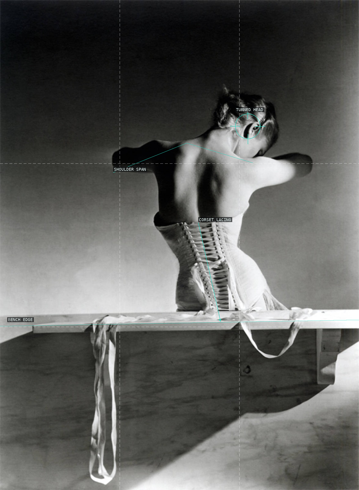
01-mainbocher-corset
Bench, shoulders, and corset lacing turn a figure into a precise vertical construction.
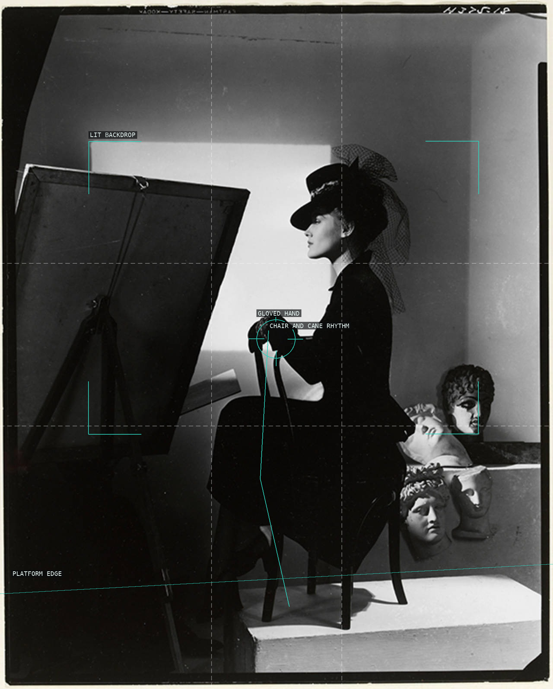
02-estrella-boissevain-bergdorf-goodman
A profile is staged against a lit rectangle with chair, cane, and plaster heads.
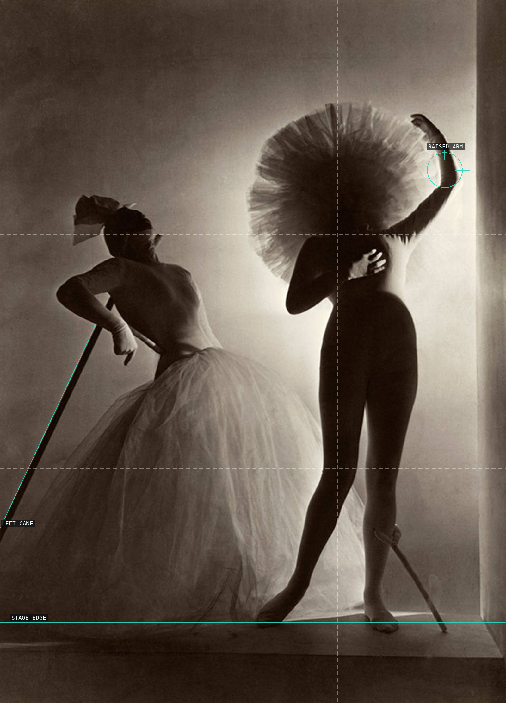
03-bacchanale-costumes
Two opposed performers make costume and set read as a balanced theatrical mass.
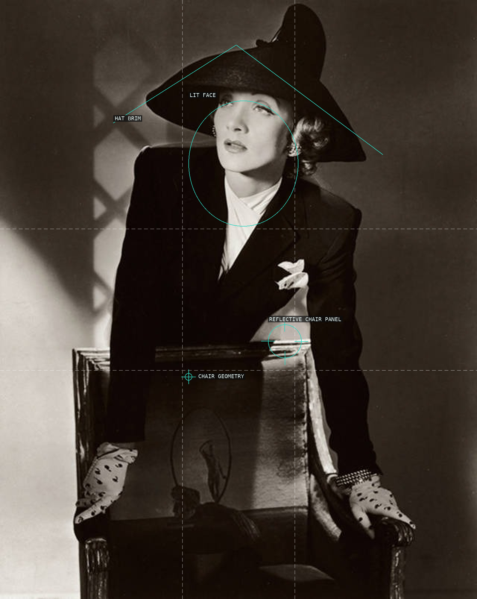
04-marlene-dietrich
Hat brim, lit face, and reflective chair compose a deliberately hard glamour portrait.
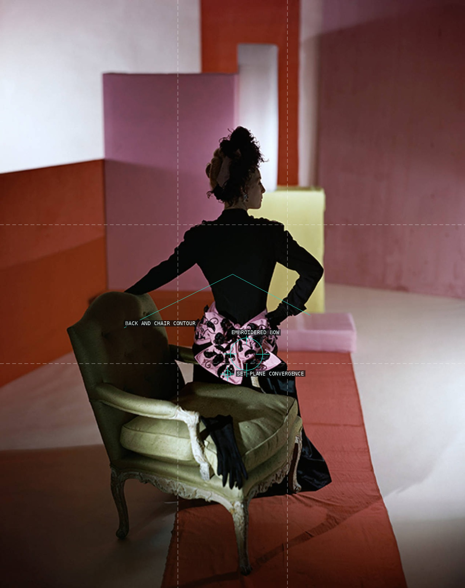
05-schiaparelli-dinner-suit
Silhouette, chair, bow, and tilted color planes make a compact set-piece.
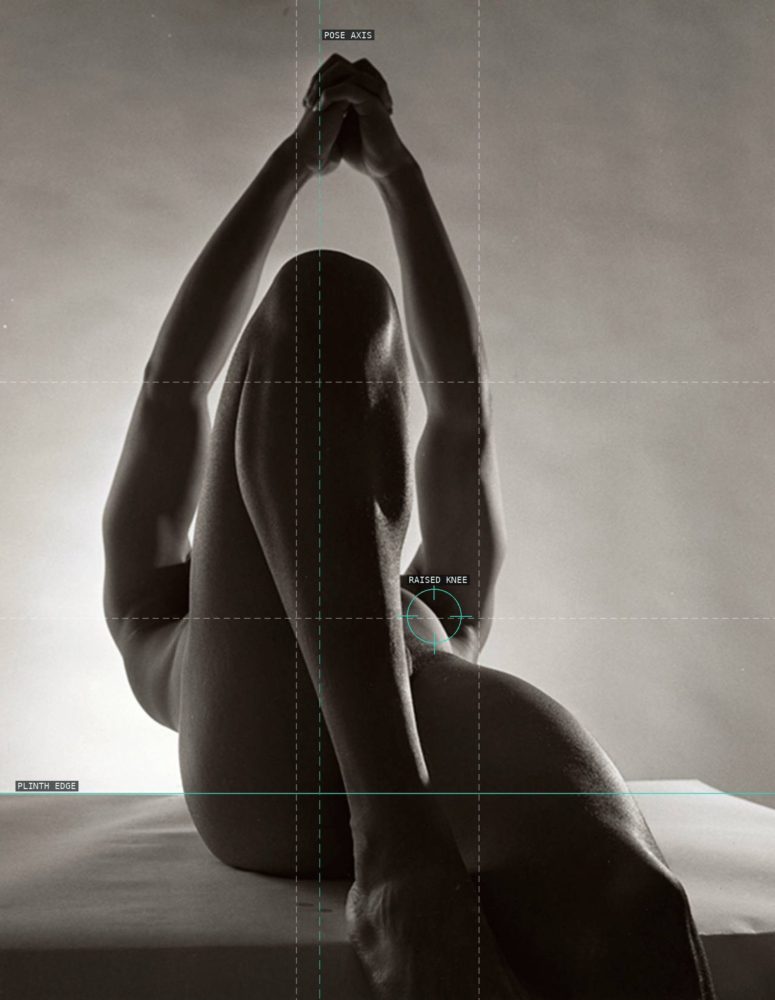
06-male-nude
An arch of arms and a plinth turn the body into a sculptural light study.
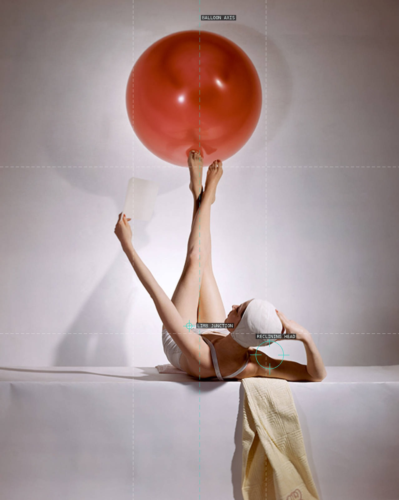
07-summer-fashions-vogue-cover
Balloon axis, limb junction, and reclining head make a centered cover-scale design.
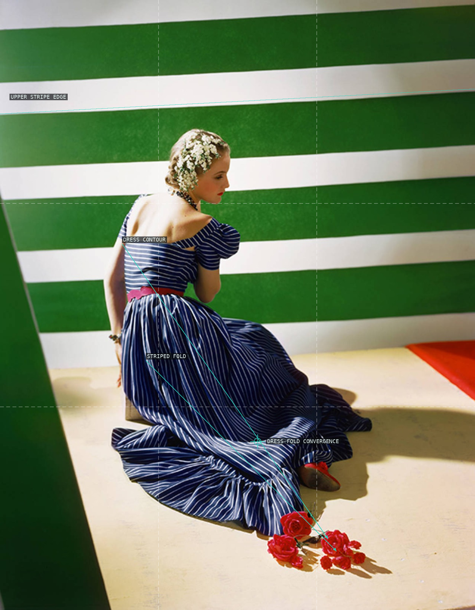
08-hattie-carnegie-dress
Striped backdrop and dress folds establish counter-rhythms of horizontal and diagonal line.
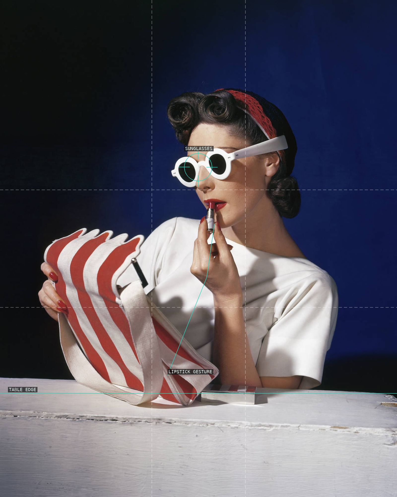
09-muriel-maxwell-vogue-cover
Sunglasses, lipstick gesture, striped accessory, and table edge make a graphic triangle.
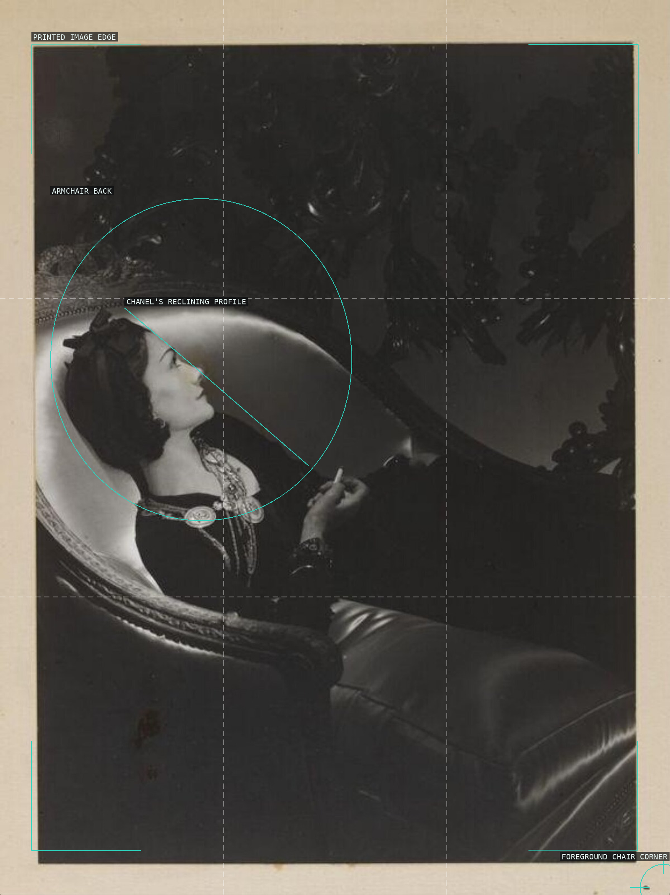
10-coco-chanel
A reclining profile is enclosed by an armchair curve and the border of the surviving print.
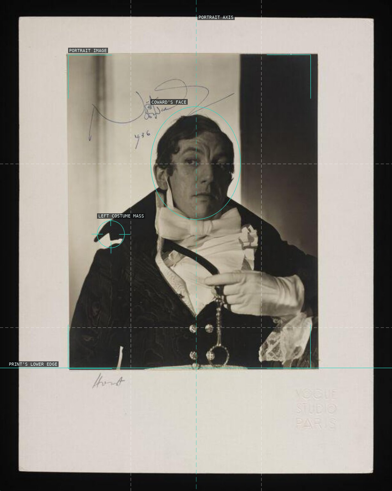
11-noel-coward-paul
Print border and portrait axis make costume and expression into staged performance.